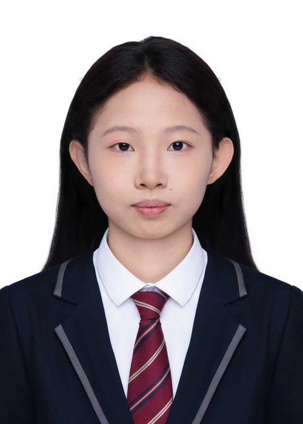
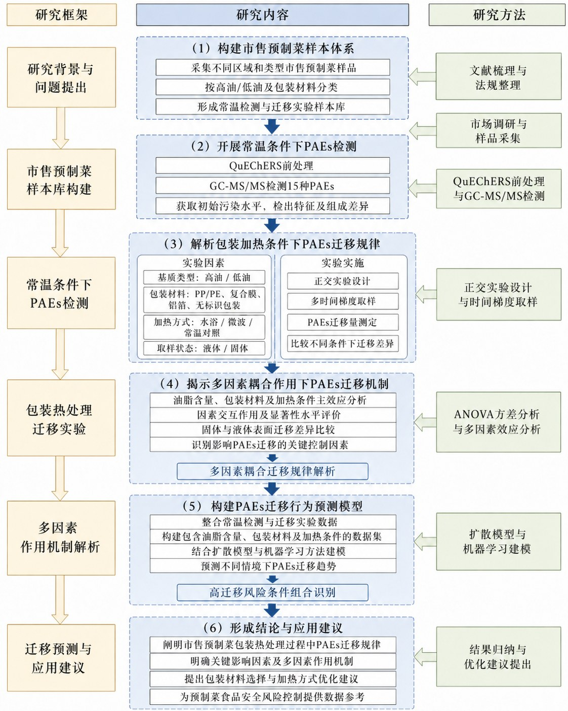
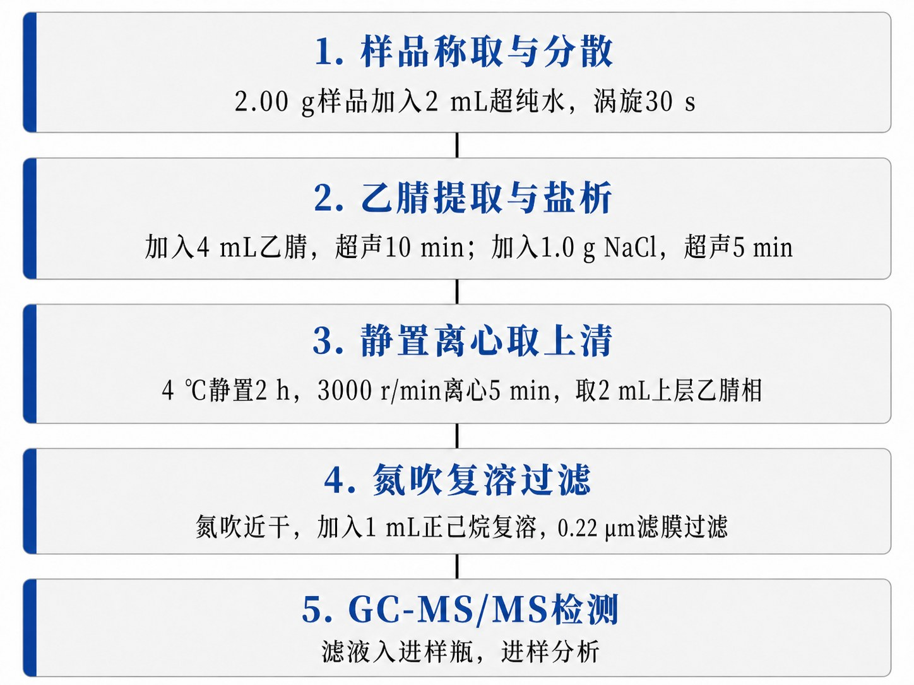
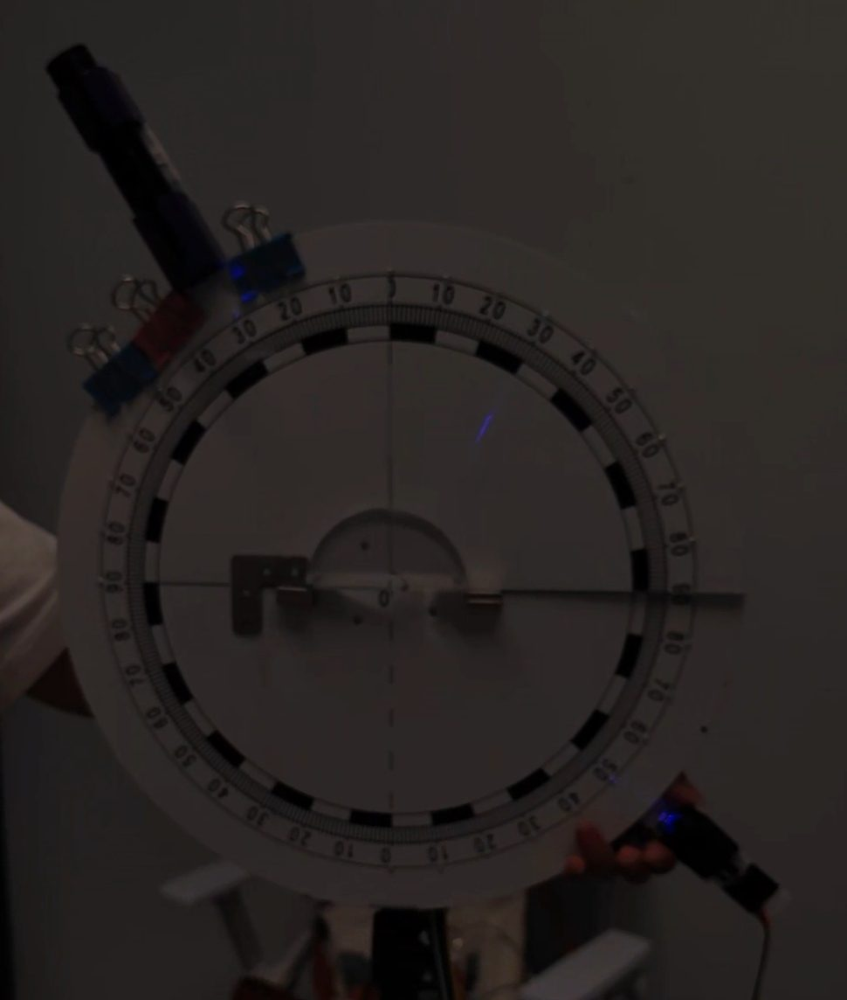
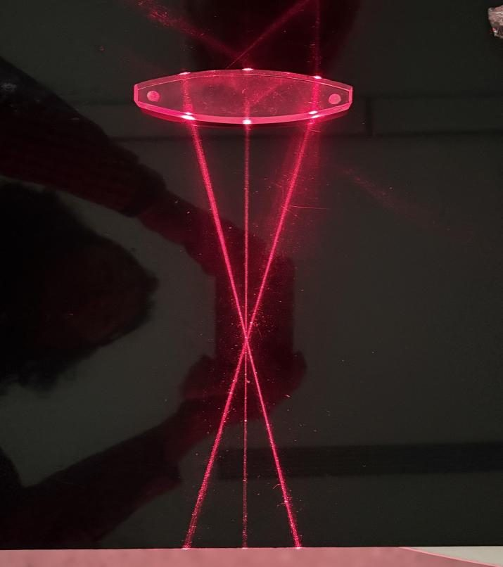
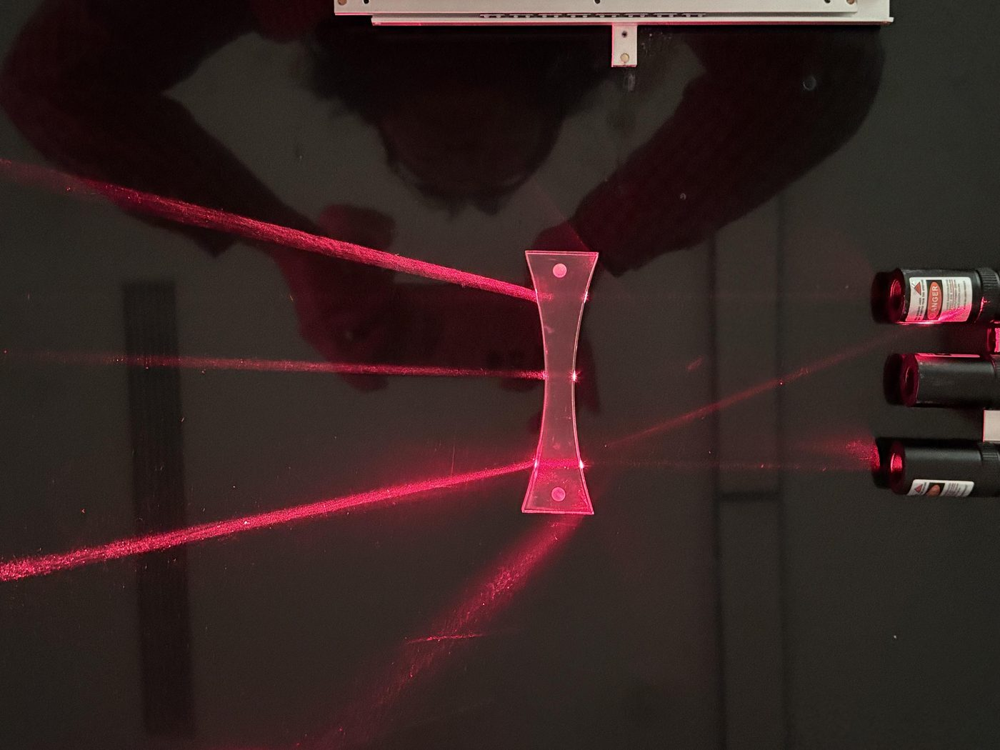
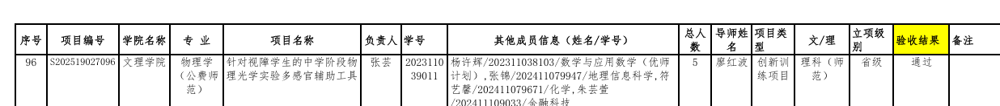

Portfolio · Research & Projects
符艺馨
化学（拔尖人才创新实验班）· 2024 级
用化学的严谨，去解决真实世界的问题
主持国家级大创项目研究预制菜包装中邻苯二甲酸酯的迁移机制，参与省级大创为视障学生研发光学实验辅助装置， 并带领团队完成多类数据科学与市场调研竞赛。关注食品安全分析、特殊教育辅助技术与 AI 辅助科研三个方向。

01 · Overview
概览
从中学化学竞赛起步，到进入国家级大学生创新创业训练计划，我的项目始终围绕同一个问题： 怎样让技术真正落到需要它的人和场景里去。
主持国家级 1 项 · 参与省级 1 项（已结项验收）
专业排名 2 / 21（9.52%）
国赛、省赛、校级一等奖与二等奖
含第十五届全国运动会志愿服务
我如何做事
三个项目看上去分属食品安全、特殊教育与社会调研，但方法论是一致的： 先做扎实的一手调研——去盲校访谈教师、蒙眼做完整个实验、把问卷投放到上千个真实的玩家社区， 再据此倒推方案。我的项目很少停留在纸面，每一个都要求能被真实的人使用。
02 · Research Projects
科研项目
三个代表性的科研与创新创业项目，覆盖分析检测、嵌入式系统与交叉学科方法。
市售预制菜包装热处理过程中 PAEs 迁移特征及多因素作用机制研究
2026 — 国家级大创本项目聚焦市售预制菜包装储存与复热食用过程中食品接触材料中邻苯二甲酸酯类（PAEs）的迁移行为。 预制菜通常经历包装储存、冷链运输和复热食用等环节，接触时间长，温度升高、油脂含量差异及包装材质变化 均可能影响 PAEs 由材料相向食品相迁移。
以市售预制菜为研究对象，构建涵盖不同油脂水平、包装材质及加热方式的样本体系， 采用优化 QuEChERS 前处理结合 GC-MS/MS 技术对 15 种 PAEs 进行痕量分析， 明确初始污染水平与优势单体组成；并设置水浴加热、微波加热及常温对照， 系统分析油脂含量、包装材料、加热方式与时间梯度对迁移行为的影响。 在此基础上结合方差分析、扩散模型与机器学习方法构建迁移行为预测模型， 识别多因素耦合下的关键影响因素与高风险组合。


针对视障学生的中学阶段物理光学实验多感官辅助工具
2025 — 省级大创 · 已结项验收研发一套基于多模态感知的嵌入式语音引导辅助系统：ESP32 为核心，集成 MPU6050 倾角传感器、 光强传感器与 TTS 语音模块，构建「听觉播报 + 触觉定位 + 蜂鸣提示」复合反馈机制， 对光的反射、色散、全反射及透镜作用四大核心光学实验进行装置重构与流程优化， 采用模块化代码设计与 FreeRTOS 多任务调度实现稳定运行。
项目背景是我国视障学生教育发展滞后：高中阶段视障学生在校人数仅约 5000 人， 成功升入高中及高等教育阶段的比例仅约 0.076%。我主要承担传感器代码编写调试、 盲校教师深度访谈与实验模拟测试三项工作。




基于 LLM 的科研智能体：Micro-agent 与自旋电催化问答预测
2025 — 朋辈科研辅导面向微生物与自旋电催化两个领域，构建以 Executor、Reasoner 为核心的科研智能体框架。 采用 GraphRAG + VectorRAG 的混合检索架构，以 KEGG 数据库作为知识图谱链接实体， 搭建涵盖催化剂自旋状态、结构参数与催化性能（过电位、Tafel 斜率）的数据库， 融合检索增强生成实现动态信息的精准检索，并结合随机森林、图神经网络建立 「自旋构型 — 催化活性」预测关系。
03 · Competitions
学科竞赛与调研
竞赛是我的项目从「想法」走向「可交付成果」的检验场。以下是我担任队长或主要成员的代表性项目。
| 项目 | 赛事 / 类型 | 我的角色 | 结果 |
|---|---|---|---|
| Z 世代主导下乙女游戏 IP 衍生物的消费决策与商业变现路径研究 | 全国大学生市场调查与分析大赛（广东省赛区） | 队长 · 调查方案设计与问卷投放 | 省赛二等奖 |
| 基于高相关特征选择的信贷风险评估模型优化研究 | 四川省大学生数据科学与统计建模竞赛 | 建模与分析 | 二等奖 |
| NETCCS 翻译实践作品（C 类） | 全国大学生英语翻译大赛 | 参赛选手 | 省级二等奖 |
| 「贴心守护」银发人生记忆整理平台 | 第十六届全国大学生电子商务「创新、创意及创业」挑战赛 | 团队成员 · 调研与方案 | 校级二等奖 |
| 守护「舌尖上的安全」化学实验科普设计 | 「金凤杯」大学生化学实验创新大赛 | 主持人 · 实验方案书 | 参赛项目 |
| 《广东省大学生生物化学实验技能大赛》实验项目书 | 广东省大学生生物化学实验技能大赛 | 参赛选手 · 实验设计 | 参赛作品 |
| GFP 变体亮度预测与突变位点筛选 | 蛋白质设计竞赛（Protein Design Competition） | 文献调研 · 前期工作复现 | 课题进行中 |
乙女游戏 IP 衍生品调研
回收有效问卷 557 份，Python 爬取淘宝与闲鱼衍生品数据 128,661 条， 爬取 B 站、小红书、微博相关文本 10,449 条用于情感主题分析。
以 PCA 提取消费决策因子、EFA 提取情感价值维度、K-Means 完成用户分群。 结论是乙女游戏衍生品消费的核心驱动力是情感价值而非实用性—— 情感驱动因子对年消费额有显著正向影响（β=0.054，p=0.006），实用考量因子不显著； 情感价值由角色羁绊、自我投射、社群归属、情感慰藉四个维度构成。
双数据源一致性验证显示电商销量与社交提及高度相关（r=0.935）， 痛包与服饰品类供需缺口达 +6.0pp。
从实验设计到社会洞察
生化大赛的项目书围绕真实实验流程展开——从进样方法到数据处理， 每一个步骤都要求可复现、可验证。这段经历让我形成了一个习惯： 写方案时先想清楚「失败了怎么判断原因」。
而市场调查项目教给我的是另一件事：样本偏差怎么识别， 一个 0.856 的 KMO 值和 72.34% 的累计方差解释率意味着什么。 定量方法最终要回答的，是人的真实处境。
04 · Honors
荣誉奖项
学业、竞赛与个人荣誉三部分，按时间倒序整理。
校级「三好学生」
获北京师范大学三好学生称号。本学年综合考评成绩 95.97 分，专业排名 2/21（9.52%）， 平均成绩 87.12，学习成绩排名 8/21（38.10%）；大学英语四级 557 分、六级 562 分，GPA 3.83/4.0。
另获「京师」二等奖学金、同济书院「社会实践先进个人」荣誉称号。
全国啦啦操社区运动会 · 全国第一名
随队获公开青年组「活力大课间啦啦操展示（高校）」全国第一名，并参与校运动会开幕式表演。
省级大学生创新创业训练计划项目结项验收通过
参与项目《针对视障学生的中学阶段物理光学实验多感官辅助工具》通过结项验收， 验收结论为「通过」。
「京师」奖励性助学金 一等奖
获北京师范大学「京师」奖励性助学金一等奖。
大学生教育国情调查社会实践项目 二等奖团队
作为赤坎区 3 名调查员之一参与 2025 年暑假入户调查，所在团队获「二等奖团队」荣誉称号。 同期完成「京师烛火」实践队的两项专题实践并顺利结项。
高中阶段竞赛奖项
湛江第一中学期间通过自主招生进入卓越班，获全国化学竞赛（创新杯）二等奖、 迎新杯数学竞赛二等奖、迎新杯物理竞赛二等奖。
05 · Toolkit
技能与工具
这些是我在项目中反复使用的工具与能力，也是我判断能否胜任下一项工作的依据。
| 类别 | 具体内容 | 应用场景 |
|---|---|---|
| 文献与写作 | Zotero · LaTeX · Origin | 文献综述整理、图表绘制、结项报告与学术报告撰写 |
| 数据分析 | Python · pandas · NumPy · scikit-learn | 电商与社交媒体数据爬取清洗、因子分析、聚类建模 |
| 统计方法 | PCA · EFA · K-Means · 回归分析 · 相关分析 | 消费决策因子提取、情感价值维度构建、消费者分群 |
| 嵌入式开发 | Arduino · ESP32 · FreeRTOS · 模块化设计 | 多传感器协同、倾角与光强采集、语音播报与声光反馈 |
| 化学分析 | QuEChERS 前处理 · GC-MS/MS · 生物化学实验技能 | 15 种 PAEs 痕量检测方法建立与食品接触材料分析 |
| AI 与智能体 | LLM · RAG / GraphRAG · 知识图谱 · Multi-Agent 编排 | 微生物与自旋电催化领域的检索增强问答与活性预测 |
06 · Beyond the Lab
实践与服务
科研之外的部分：志愿服务、社会实践与班级工作。
志愿服务 · 100+ 小时
参与第十五届全国运动会志愿服务。担任 2024 级化学拔尖人才创新实验班宣传委员， 参与班级公众号建设与班级活动组织。
暑期先后参与「京师烛火」实践队的「进社区、进学校」专题实践与 「合作单位对口帮扶县域支教项目」，完成「传红色基因，讲英雄故事」 与「832」县域及中西部边境县支教两个专题项目，均结项获评优秀。
京津线科技创新研学
参加「走在祖国大地上的思政课」之京津线科技创新研学，项目成功结项； 参与大学生教育国情调查社会实践项目，团队获二等奖。
这些经历让我意识到：技术之外，真正稀缺的是愿意沉到现场去的人。 在盲校做教师访谈、在赤坎区做入户调查、在实验室做蒙眼测试， 三件事教会我的是同一种能力——先听懂真实的需求，再动手做方案。